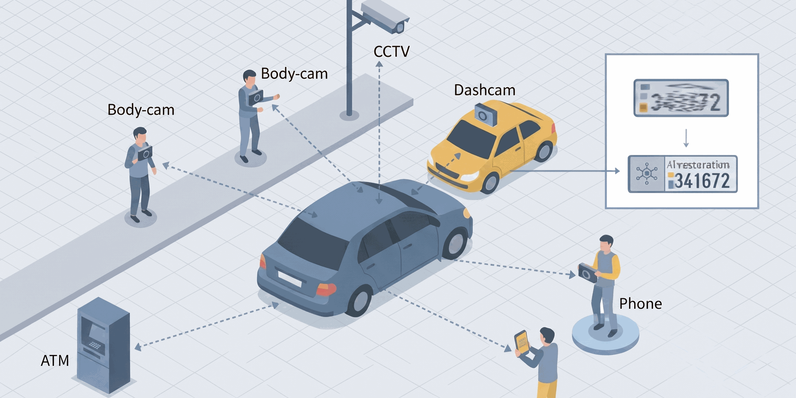
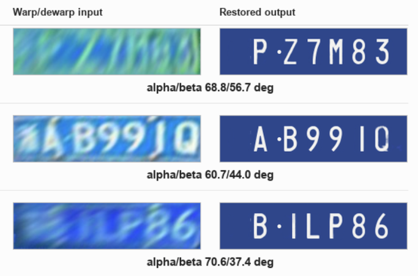

Preliminary proposal for Afeka internal POC prescreening, 2026
ReSight: AI for Repurposing Available Sensors into Actionable Intelligence
ReSight: מערכת חישה וניתוח אופורטוניסטיים ממקורות חזותיים קיימים.
תקציר בעברית
ReSight הוא מנוע ליבה מבוסס AI לחישה וניתוח אופורטוניסטיים ממקורות חזותיים קיימים: מצלמות עירוניות, מצלמות אבטחה, מצלמות דרך, מצלמות גוף, מצלמות רכב, מצלמות ATM, ותמונות או סרטונים שמעלים אזרחים. לדוגמה, מצלמת ATM שהותקנה לצורכי אבטחה עשויה לקלוט גם רכב סמוך, מפגע ברחוב או אירוע חריג בסביבה. המערכת מיועדת להפיק תובנות שימושיות ממקורות שלא הוצבו במקור עבור משימת המטרה, גם כאשר המידע קטן, מעוות, רועש, מטושטש או קשה לפענוח אנושי. הגישה מאפשרת להרחיב את הערך של חיישנים ותשתיות שכבר הותקנו ושולם עבורם, במקום להקים מערך חיישנים ייעודי לכל יישום חדש. הטכנולוגיה נשענת על מחקר עדכני של החוקרת הראשית ושותפיה בנושא שחזור מידע חזותי מזוויות צפייה קיצוניות [1]. הפרויקט יהפוך את הגישה למנוע שימושי להפקת תובנות פעולה, תעדוף אירועים, יצירת התרעות ותמיכה בהחלטות עבור עיר חכמה, surveillance, ביטחון, מוקדי חירום ואינטגרטורים של מערכות וידאו.
1. Need Addressed by the Project
Modern cities are full of visual sensors that were installed and tuned for specific tasks. Face-recognition cameras are positioned for access control, license-plate cameras for vehicle identification, traffic cameras for flow monitoring, dashboard cameras for insurance evidence, ATM cameras for security, and citizen-uploaded videos for reporting a local incident. Yet each of these sources also captures many other details about the surrounding world. A dashboard camera may capture a damaged road sign. An ATM camera may capture a nearby vehicle. A citizen video may contain evidence of flooding, crowding, smoke, infrastructure damage, or unsafe traffic behavior. Although these sensors and their supporting infrastructure involve significant cost, their practical value is usually limited to a single application.
The problem is that this secondary information is often difficult to use. The camera was not placed for the new task, so the object of interest may be extremely distorted: small, oblique, warped, noisy, blurred, compressed, partly occluded, poorly illuminated, motion-smeared, outside the best field of view, or extremely dewarped after geometric correction. In many cases, the useful signal is difficult for the human eye. Modern AI models can now extract rich useful information from such difficult visual material, but operational users still need a system that can turn scattered, imperfect footage into actionable insight.
ReSight uses AI to convert difficult visual material into structured operational outputs and connect them to decisions such as alerts, triage, prioritization, and follow-up review. Its key differentiator is the opportunistic sensing approach: instead of requiring new dedicated sensors for every task, the system turns scattered visual evidence into reusable intelligence, substantially increasing the return on investment from existing sensing infrastructure.
Current market data shows a large sunk-cost opportunity. The global video-surveillance market was estimated at USD 53.57B in 2024 and is projected to reach USD 88.06B by 2031; hardware accounted for 61.8% of the market in 2024 [6]. The global smart-cities market was estimated at USD 615.7B in 2024 and is projected to reach USD 1,445.6B by 2030 [7]. These figures indicate that cities, security operators, and infrastructure owners are already investing heavily in cameras, storage, connectivity, command centers, and related digital infrastructure.
The analytics layer is growing even faster. The global video-analytics market was estimated at USD 12.71B in 2024 and is projected to reach USD 37.84B by 2030, while AI video analytics for smart cities alone is projected to grow from USD 8.50B in 2025 to USD 28.76B by 2030 [8,9]. ReSight targets the economic gap between these two facts: visual infrastructure is already installed and paid for, while additional AI value depends on reusing that same base for more than one task.
2. Project Objective
The objective is to build the ReSight core engine: a reusable AI-driven opportunistic sensing engine that extracts useful insights from available visual sources. The technology builds on recent work by the PI and collaborators on recovering visual information under extreme viewing angles [1]. The engine will accept a defined operational task and a class of sources, ingest or simulate relevant footage, run restoration and analytics models, extract structured findings, calculate reliability metrics, and provide actionable insights for operational use.

The first demonstrator will focus on vehicle and road-scene analytics under difficult viewing conditions, including vehicle detection, license-plate reading, road-hazard detection, and triage of citizen-uploaded street imagery. The license-plate component is scientifically grounded in the existing paper on recoverability under extreme viewing angles. The core engine, however, will be designed for additional smart-city, surveillance, and defense tasks, such as infrastructure condition monitoring, traffic-incident awareness, crowd-density estimation, emergency-signal detection, and perimeter situational awareness.
3. Existing Market Solutions
The market includes license-plate recognition systems, video-management systems, smart-city analytics platforms, forensic video tools, and AI image-enhancement products. These products are valuable, but most are built around purpose-installed sensor arrays: the camera, lens, height, angle, illumination, lane coverage, field of view, and analytics model are selected together for a known operational regime. The analytics are then designed to work within these engineered limits, not to repurpose uncontrolled footage from cameras installed for other reasons.
Typical LPR deployments illustrate this limitation. Axis recommends keeping both horizontal and vertical angles below 30 degrees and placing the capture point at about twice the mounting height; VIVOTEK guidance recommends vertical angle within 30 degrees, horizontal angle within 20 degrees, 15 to 30 meters between camera and reading point for roadside installations, and no more than two lanes per camera [10,11]. These ranges are appropriate for dedicated LPR infrastructure, but they do not describe the opportunistic regime in which an ATM camera, dashboard video, body camera, road camera, or citizen-uploaded clip may capture the relevant object from a difficult, distorted, or partial viewpoint. In contrast, the PI's recent research shows that AI-based recovery can read license plates even under extreme viewing angles above 80 degrees in the studied benchmark setting [1].
In contrast to purpose-installed systems that are optimized for a known operational regime, ReSight is designed for the uncontrolled regime of existing cameras, video platforms, citizen-report channels, and field media. It extracts actionable findings from heterogeneous sources, determines when the media supports the task, identifies where additional sensing is needed, compares model families under operational degradation, and routes uncertain cases to human review. The financial logic is direct: cameras, connectivity, storage, and visual workflows are already installed and already paid for; ReSight increases the return on that installed base by enabling multiple additional applications on top of the same sensors. This creates a clear commercial path for municipalities, defense and homeland-security integrators, transportation operators, parking operators, emergency centers, and companies building analytics on top of existing visual data.
4. Deliverables, Milestones, and Metrics
Intermediate deliverables:
- A scenario generator for camera footage, mobile media, citizen-uploaded images and videos, viewing angle, blur, illumination, motion, compression, and resolution.
- A modular AI restoration, recognition, and analytics engine that can extract OCR, object, vehicle, road-hazard, infrastructure, traffic, and emergency-event cues.
- A reliability and analytics module with extracted insights, coverage, failure-region, and human-review metrics.
- A demonstration interface showing source quality, extracted findings, task reliability, model comparison, failure boundaries, and recommended operational use.
- An initial validation-partner and commercialization document focused on recovering additional value from existing sensors.
Final deliverable: A working core engine showing how ReSight repurposes an opportunistic visual source, such as an existing camera stream or citizen-uploaded media, into structured insights and operational recommendations for a selected analytics task.
Proposed milestones: Months 1 to 4, define use cases, validation requirements, source types, insight schema, and evaluation metrics. Months 5 to 10, implement the synthetic scenario generator and baseline analytics pipeline. Months 11 to 16, implement insight extraction, reliability scoring, model comparison, and uncertainty routing. Months 17 to 20, validate the core engine on a realistic smart-city, surveillance, or defense scenario with feedback from engaged validation partners. Months 21 to 24, finalize the engine package, intellectual-property plan, and commercialization roadmap.
Success metrics: accuracy of extracted insights within reliable regions, coverage of the operational parameter space, stability of the reliability score, detection of failure regions, reduction in manual triage load, agreement with limited real or field-like validation, runtime for recommendation generation, and clarity of recommendations for an operational user.
5. Research Novelty
The scientific novelty began with a central obstacle in opportunistic sensing: models must work outside the controlled camera placement and narrow operating regimes assumed by purpose-built systems. Real training data usually reflects intended, easy-to-capture conditions, not the extreme viewpoints and degradations that appear when an existing camera is repurposed for a new task. Our prior work addressed this gap through smart synthetic augmentation, using scrambled Sobol quasi-Monte Carlo sampling to generate training examples across the full acquisition space, including viewing angle, perspective distortion, scale, resolution, blur, noise, compression, illumination, and partial occlusion [1]. This protocol supported purpose training of restoration models from several architecture families, including encoder-decoder, transformer-based, GAN-based, and diffusion-based approaches, while exposing them to the difficult corner cases where opportunistic sensing must actually operate.

The second innovation was trust-aware evaluation. Modern restoration models, especially generative GAN and diffusion families, can sometimes produce outputs that look plausible while being wrong under low-signal conditions. For operational use, restoration quality must therefore be tied to task utility and to the conditions under which the output remains dependable. Our prior work did this by evaluating downstream OCR performance and introducing two operating-condition metrics: boundary-AUC, which estimates the outer extent of the recoverable region, and a reliability score, which measures the frequency and depth of failures inside that nominally recoverable region [1]. This distinction separates models that cover a wide operating area uniformly from models that appear broadly capable but contain hidden failure pockets. The same trust-aware principle also appears in our work on chest X-ray classification with rejection mechanisms, where uncertain predictions are deferred instead of forced into automatic decisions [2].
6. Required Resources
- Cloud GPU compute: used to train and compare large restoration and analytics models across source types, degradation levels, target applications, and model families. It will also support repeated experimental sweeps needed to establish recoverability maps, task-specific performance measurements, reliability scores, and failure-region analysis.
- Cloud storage and visual data infrastructure: used to store large synthetic and permitted real visual datasets, including vehicles, streets, infrastructure, public-space events, citizen-uploaded media, and surveillance-like footage. It will also store generated training sets, augmented variants across viewing angle, perspective distortion, resolution, blur, motion, compression, illumination, occlusion, and sensor placement, plus model checkpoints, evaluation outputs, and recoverability-map artifacts.
- Software engineer or research assistant: used to implement the reusable ReSight core engine, including data ingestion, augmentation workflows, model-experiment orchestration, recoverability-map generation, reliability scoring, and a demonstration interface for selected validation scenarios.
7. Technological Innovation
ReSight will be developed as a scalable AI inference engine for opportunistic visual sensing. The initial architecture will be cloud-first, using cloud GPU resources for heavy restoration, analytics, reliability estimation, and recoverability-map generation. The engine will be configurable to specific tasks and operational regimes, ingesting visual inputs from existing cameras, video files, still images, body cameras, dashboard cameras, ATM cameras, and citizen-uploaded media. Its output will be a structured stream of insights, confidence indicators, failure-region warnings, and human-review flags that can be consumed by subscribing systems through an API.
The future-looking technological path has two directions. First, compact model variants can be adapted for on-board camera or edge-device inference where latency, bandwidth, privacy, or connectivity constraints make local processing valuable. This direction is supported by PTEENet and CalexNet, prior work on lightweight early-exit branches and calibrated selective inference [3,5]. Second, body-worn and mobile footage can be converted into compact situational views, building on prior work on panoramic incident summaries from long field videos [4]. Together, these paths give ReSight a practical product architecture: cloud GPU inference for complex tasks and large-scale experimentation, with future options for lighter on-camera analytics and field-video summarization in selected validated scenarios.
8. External Partner
We will strive to establish a validation partnership with a municipality, for example Tel Aviv-Yafo, or with a video-analytics vendor, for example Motorola Solutions. Tel Aviv-Yafo's smart-city materials identify Motorola as a provider of communications, information gathering, command-and-control, and analytics infrastructure for the city, and Motorola describes fixed video security systems with AI video analytics for safe-city and public-safety workflows [12,13]. Such a partner can help define a realistic operational use case, interface requirements, field constraints, success criteria, and commercialization feedback.
The preferred first use case is a bounded smart-city scenario, such as citizen-uploaded road hazards and infrastructure reports, because it is operationally clear, socially useful, and suitable for demonstrating the reuse value of existing visual sources with synthetic data, permitted public media, or approved field data.
References
- Adamenko, I., Ben Aharon, O., Aperstein, Y., & Apartsin, A. (2026). Mapping license plate recoverability under extreme viewing angles for opportunistic urban sensing. AI (MDPI), accepted for publication. https://doi.org/10.48550/arXiv.2604.23814
- Aperstein, Y., Tzahar, A., Gottlib, A., Verber, T., Shagan Damti, R., & Apartsin, A. (2025). Multi-pathology chest X-ray classification with rejection mechanisms. arXiv. https://doi.org/10.48550/arXiv.2509.10348
- Lahiany, A., & Aperstein, Y. (2022). PTEENet: Post-trained early-exit neural networks augmentation for inference cost optimization. IEEE Access, 10, 69680-69687. https://doi.org/10.1109/ACCESS.2022.3187002
- Cohen, D., Efrosman, I., Aperstein, Y., & Apartsin, A. (2025). Stitching the story: Creating panoramic incident summaries from body-worn footage. arXiv. https://doi.org/10.48550/arXiv.2509.04370
- Aperstein, Y., & Apartsin, A. (2026). CalexNet: Soft cascade-aligned training and calibration for lightweight early-exit branches. Electronics, 15(10), 2149. https://doi.org/10.3390/electronics15102149
- MarketsandMarkets. (2025). Video surveillance market size, share & analysis, 2031. https://www.marketsandmarkets.com/Market-Reports/video-surveillance-market-645.html
- MarketsandMarkets. (2025). Smart cities market report 2025-2030. https://www.marketsandmarkets.com/Market-Reports/smart-cities-market-542.html
- Grand View Research. (2025). Video analytics market size, share & trends analysis report, 2030. https://www.grandviewresearch.com/industry-analysis/video-analytics-market
- MarketsandMarkets. (2026). AI video analytics for smart cities market size, share and growth. https://www.marketsandmarkets.com/Market-Reports/ai-video-analytics-smart-cities-market-244577801.html
- Axis Communications. (2026). Things to consider for license plate capture. https://www.axis.com/products/things-to-consider-for-license-plate-capture
- VIVOTEK. (2024). IP camera setup for ALPR best practices for optimal recognition. https://www.vivotek.com.my/file/vivotek/camera_setup_guide_for_ALPR.pdf
- Tel Aviv-Yafo Municipality. Smart City Tel Aviv. https://www.tel-aviv.gov.il/en/WorkAndStudy/Documents/SMART%20CITY%20TEL%20AVIV.pdf
- Motorola Solutions. Fixed intelligent video security. https://www.motorolasolutions.com/en_xl/video-security-access-control/fixed-video-security.html